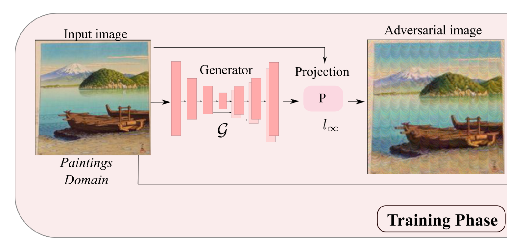

|
I've successfully defended my PhD thesis recently. I did my PhD from CVLab, Department of Computer Science, EPFL. I'm extremely fortunate to be supervised by Dr. Mathieu Salzmann and Prof. Pascal Fua in the areas of computer vision and deep learning. My research focus is to understand the strengths and weaknesses of deep neural networks in safety and security-critical applications. My PhD thesis explores the topics of interpretable models, transfer-based black-box attacks, attack detection, adversarial defenses, anomaly detection, and disentangled representations. Email / CV / Google Scholar / Github / LinkedIn |

|
|
The long-term goal is to build machine learning algorithms that are more robust, and interpretable. |
|  |
Krishna Kanth Nakka, Mathieu Salzmann NeurIPS, 2021 Generators trained with mid-level feature separation loss transfers significantly better in cross-model, cross-domain and cross-task setting |